01 · Descripción general
Qué es Ovenbird
Ovenbird es una aplicación para Linux con escritorio GNOME que reúne un editor de documentos LaTeX y una biblioteca local de referencias BibTeX. Los archivos del proyecto se mantienen en formatos comunes, como .tex y .bib, y permanecen en la carpeta elegida por quien usa la aplicación.
La aplicación ofrece los modos Código (Code) y Visual para editar documentos LaTeX. La biblioteca de referencias es independiente de cada proyecto: puedes añadir referencias, buscarlas y filtrarlas, importar archivos .bib y exportar una copia BibTeX.
02 · Instalación
Requisitos e instalación
- El archivo publicado es un paquete Flatpak para Linux x86_64.
- Es necesario tener Flatpak instalado y configurado. El paquete usa el runtime
org.gnome.Platformversión 51. El archivo de instalación no incluye este runtime, por lo que Flatpak quizá tenga que descargarlo de una fuente configurada en el sistema. - La versión Flatpak 0.3.0 incluye Tectonic para compilar documentos. La primera compilación puede necesitar descargar archivos de soporte del motor LaTeX.
Si aún no tienes Flatpak configurado, consulta las instrucciones de configuración de Flatpak para preparar el sistema. La documentación oficial sobre paquetes Flatpak de archivo único explica cómo instalarlos directamente e indica que este tipo de paquete no incluye sus dependencias.
Descargar Ovenbird 0.3.0 para Linux x86_64
- Descarga el archivo Ovenbird-0.3.0-x86_64.flatpak.
- Si está en la carpeta Descargas, abre una terminal y ejecuta:
flatpak install --user "$HOME/Downloads/Ovenbird-0.3.0-x86_64.flatpak"- Confirma la instalación cuando se te solicite. Después, abre Ovenbird desde el menú de aplicaciones del sistema.
Si el archivo está en otra carpeta, sustituye la ruta del comando por la ubicación donde lo guardaste. Para iniciar la aplicación desde una terminal después de instalarla, ejecuta flatpak run io.github.diegopn.ovenbird.
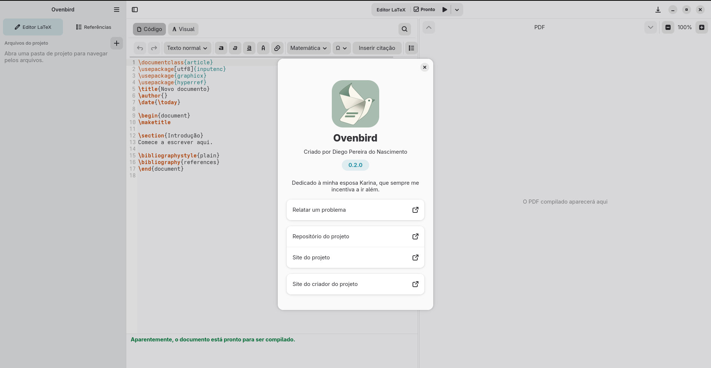
03 · Proyectos
Primer inicio y proyectos
La primera vez que se abre, Ovenbird muestra el editor sin ningún proyecto seleccionado. De forma predeterminada, en los siguientes inicios intenta volver a abrir el último proyecto utilizado. Puedes cambiar este comportamiento en las preferencias.
Crear un proyecto
- Elige Nuevo proyecto (New project) en el menú de la aplicación o pulsa Ctrl+Alt+N.
- Selecciona un documento en blanco o una de las plantillas incluidas: ABNT, IEEE, ACM, Elsevier o Springer Nature.
- Elige la carpeta donde se creará el proyecto, escribe un nombre y confirma con Crear (Create).
La aplicación prepara una carpeta de proyecto con los archivos del punto de partida elegido. Las plantillas ofrecen una estructura inicial; consulta las normas vigentes de la institución o publicación a la que se destina el documento.
Abrir un proyecto o documento
Para abrir una carpeta de proyecto, elige Abrir proyecto (Open project) o Ctrl+Alt+O. Para abrir un solo archivo, elige Abrir documento (Open document) o pulsa Ctrl+O.
Preferencias de inicio
Abre el menú principal de la aplicación y elige Preferencias (Preferences) . En Abrir al iniciar, elige entre el editor LaTeX y la biblioteca de referencias. La opción Volver a abrir el último proyecto al iniciar está activada de forma predeterminada; desactívala si prefieres empezar sin restaurar el proyecto anterior.
Las preferencias también permiten elegir el tema Automático, Claro o Oscuro y definir la carpeta inicial de los diálogos de archivos. De forma predeterminada, empiezan en Descargas. Usa Elegir carpeta para seleccionar otra carpeta, o Restablecer para volver al valor predeterminado.
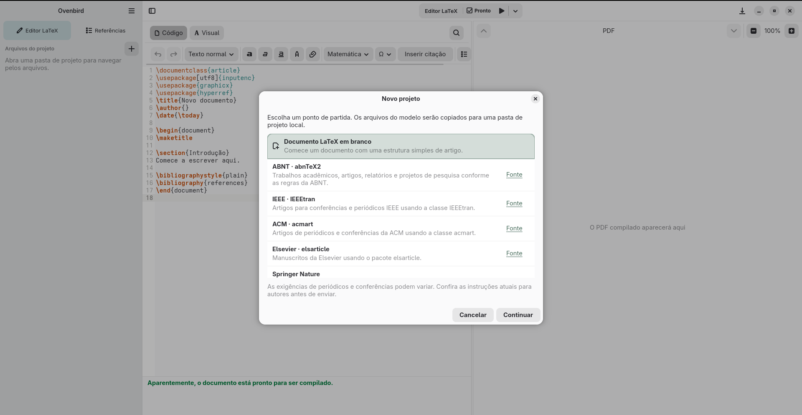
04 · Edición
Edita y compila tu documento
Abre un archivo .tex o .bib desde la lista de archivos del proyecto. Pulsa Ctrl+S para guardar y Ctrl+F para buscar texto en el archivo abierto.
Archivos .tex: modos Code y Visual
El modo Código (Code) edita el código fuente LaTeX; el modo Visual permite editar el mismo documento con formato. Para abrir el modo Visual, el archivo debe contener \begin{document} y \end{document}. El modo Visual admite un subconjunto de los comandos y entornos LaTeX implementados por la aplicación.
Si una parte no aparece en el modo Visual, vuelve al modo Código para revisar y editar el código fuente. El modo Código también permite trabajar directamente con comandos LaTeX que no tienen representación visual.
La barra del editor LaTeX ofrece deshacer y rehacer, estilos de párrafo, negrita, cursiva, subrayado, monoespaciado e inserción de enlaces. Los menús incluyen matemáticas, símbolos, listas y sangría, además de citas. En Más opciones, puedes insertar una imagen o una tabla, un comentario LaTeX, una nota al pie, una nota de revisión, una etiqueta o una referencia cruzada.
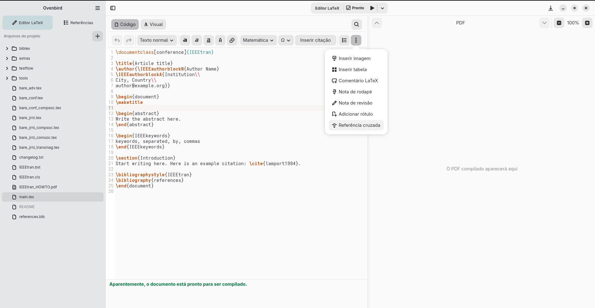

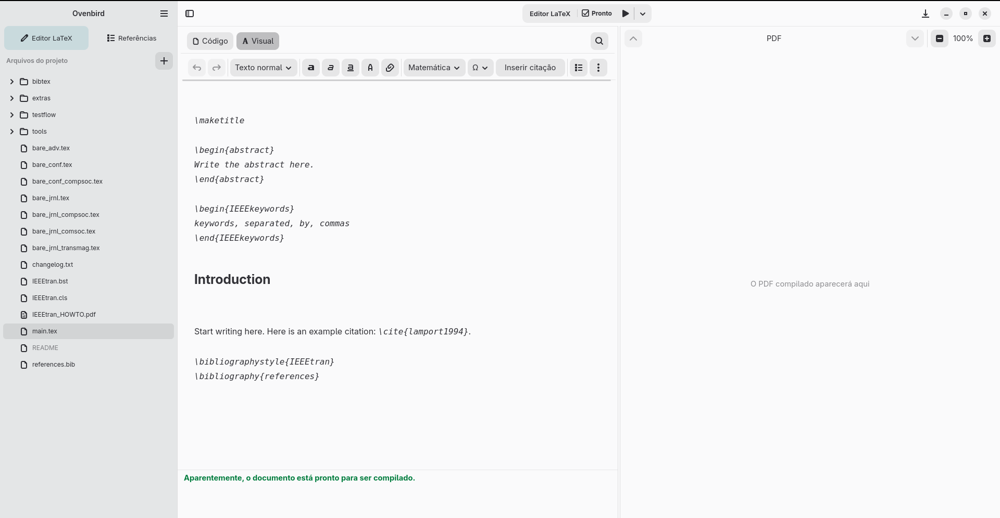
Archivos .bib: edición BibTeX
Un archivo .bib del proyecto se edita directamente como texto BibTeX; no ofrece el modo Visual. Con un archivo .bib abierto, la acción Añadir referencia bibliográfica (Add bibliographic reference) permite buscar en la biblioteca local e insertar la entrada elegida en el archivo abierto. Así puedes mantener en el proyecto las entradas que utiliza el documento LaTeX.
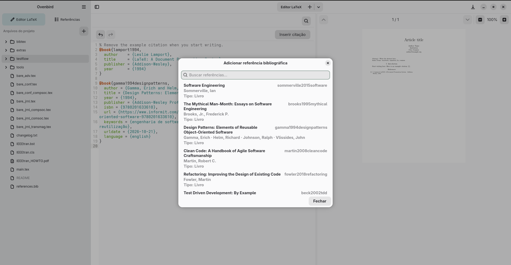
Compilar y ver el PDF
Pulsa Compilar (Compile) o usa el atajo Ctrl+Shift+R. Ovenbird busca latexmk, pdflatex o Tectonic; la versión Flatpak 0.3.0 incluye Tectonic. Cuando la compilación termina correctamente, el PDF aparece en el área de vista previa. Consulta el estado de compilación para identificar mensajes de error.
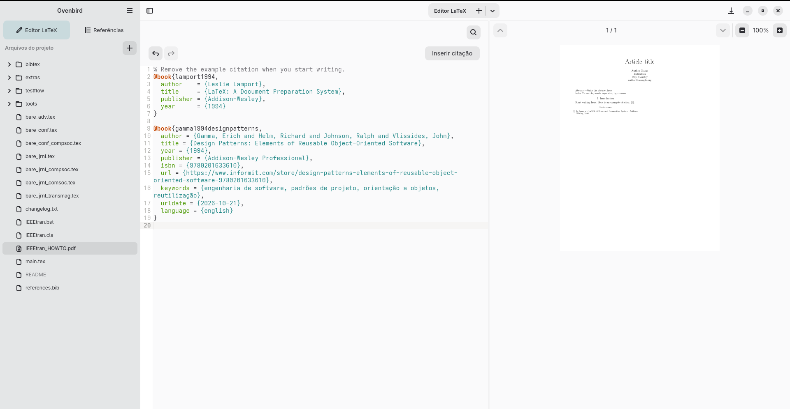
05 · Referencias
Organiza la biblioteca BibTeX
Abre Referencias (References) en la barra lateral para acceder a la biblioteca local. Busca los registros y filtra por autor, año, etiqueta o tipo. También puedes ordenarlos por título, autor, año o etiqueta, en orden ascendente o descendente.
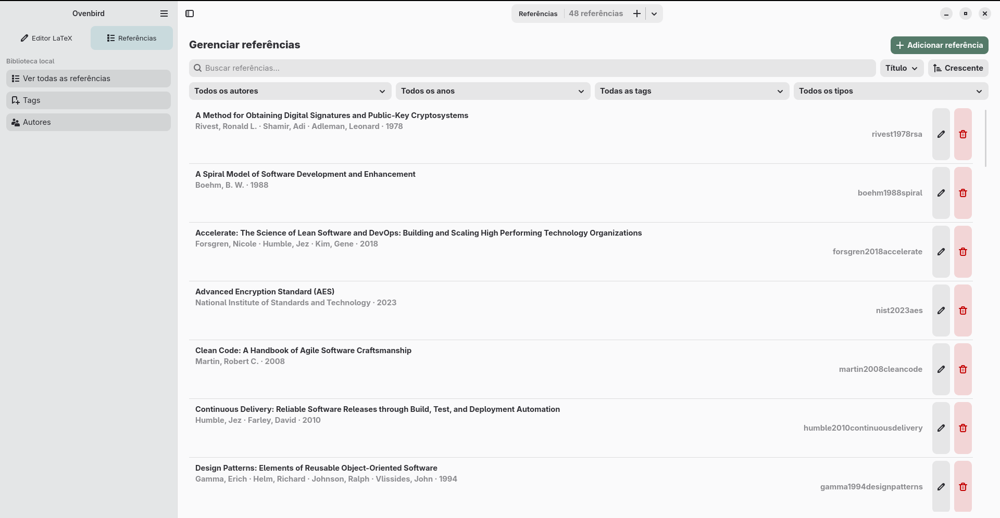
Añadir y mantener referencias
Pulsa Añadir referencia (Add reference) para elegir el tipo de registro e introducir la clave de cita, el título, los autores y la fecha. Los campos varían según el tipo; por ejemplo, el formulario de un artículo de revista también incluye revista, volumen, número o edición, páginas, mes, DOI, URL y nota. Después de guardar, puedes editar o eliminar los registros desde la lista.
Las referencias pueden tener etiquetas. Al crear o editar un registro, selecciona etiquetas existentes o crea otras; después, usa el filtro de etiquetas de la lista para encontrar los registros correspondientes.
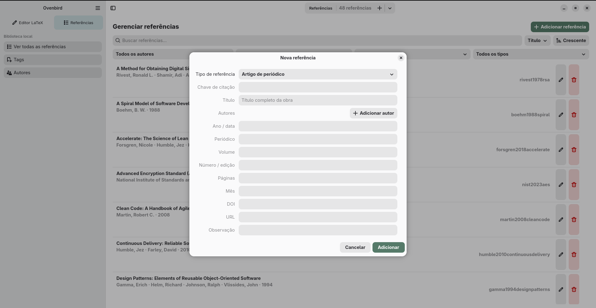
Insertar citas
- Insertar cita (Insert citation): en un documento LaTeX guardado, usa la acción o pulsa Ctrl+Shift+C para buscar en la biblioteca. Cita inserta la clave BibTeX en el documento; Referencia bibliográfica inserta una referencia con formato.
La biblioteca local es independiente de los archivos de cada proyecto. Para que una cita por clave se encuentre al compilar, la entrada correspondiente debe estar en un archivo .bib del proyecto declarado en el documento principal mediante \bibliography{...} o \addbibresource{...}. La biblioteca local no se incluye automáticamente al compilar. En un archivo .bib del proyecto abierto en el editor, elige Añadir referencia bibliográfica para copiar una entrada de la biblioteca local a ese archivo.
Etiquetas y autores
En Etiquetas, busca por nombre, ordena la lista y añade, edita o elimina etiquetas. Puedes usarlas para clasificar y filtrar registros de la biblioteca.
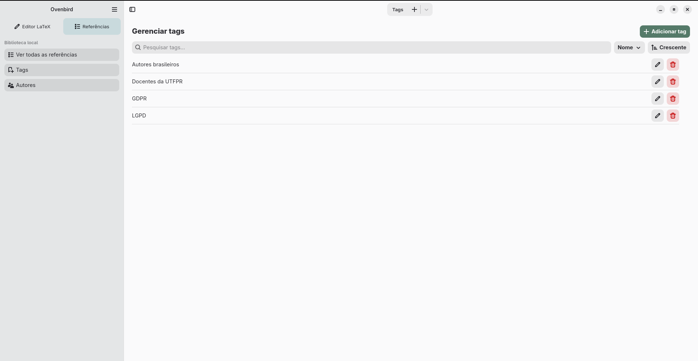
En Autores, busca y ordena por nombre completo o institución. Cada fila muestra cuántas referencias están asociadas al autor; los controles permiten añadir, editar o eliminar autores. Abre los detalles para consultar el nombre completo, el nombre usado en las referencias, ORCID, correo electrónico e institución.
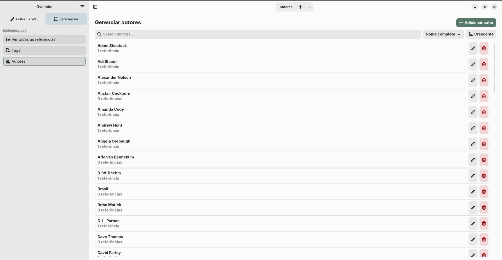
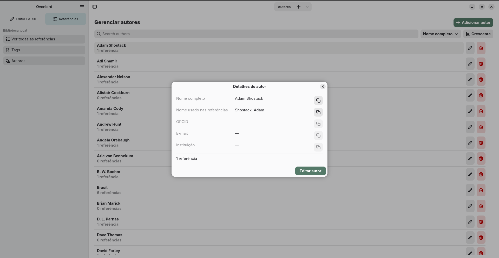
06 · Intercambio
Importar y exportar referencias
El intercambio es manual y se realiza mediante un archivo. En este flujo, Ovenbird solo admite BibTeX (.bib); no hay conexión de cuentas ni sincronización automática. El formato transfiere datos bibliográficos y algunos campos pueden mapearse de forma diferente. No se garantiza la transferencia de PDF u otros adjuntos, notas ni colecciones. Al importar, Ovenbird omite las referencias cuyas claves de cita ya existen y no actualiza esos registros.
Importar a Ovenbird
Exporta la biblioteca, una colección o las referencias seleccionadas en la plataforma de origen como un archivo BibTeX (.bib). Después, en Ovenbird, abre Referencias → Importar referencias → BibTeX (.bib) y selecciona el archivo.
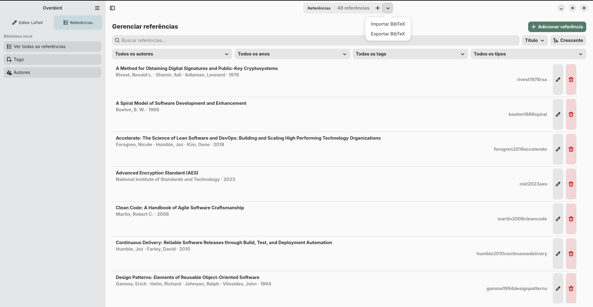
Zotero
De la plataforma a Ovenbird: Para exportar toda la biblioteca, usa File → Export Library… o la acción equivalente en el menú contextual de la biblioteca. Para una colección, haz clic derecho y elige Export Collection…; para los elementos seleccionados, haz clic derecho en la selección y elige Export Items…. Elige BibTeX y guarda el archivo .bib.
Fuentes oficiales: importar formatos estandarizados · exportar datos · mapeo de campos.
JabRef
De la plataforma a Ovenbird: JabRef trabaja directamente con bibliotecas BibTeX. Guarda o copia el archivo de biblioteca .bib que quieras transferir y selecciónalo en el importador de Ovenbird.
Fuente oficial: BibTeX y BibLaTeX en JabRef.
Mendeley Reference Manager
De la plataforma a Ovenbird: Selecciona las referencias en Mendeley Reference Manager, elige Export en el panel de acciones, selecciona BibTeX (.bib) y guarda el archivo.
Fuentes oficiales: importar referencias · exportar la biblioteca.
Exportar desde Ovenbird
En Ovenbird, abre Referencias → Exportar referencias → BibTeX (.bib) y guarda el archivo. Después, impórtalo o ábrelo en la plataforma de destino siguiendo los pasos que se indican a continuación.
Zotero
De Ovenbird a Zotero: En Zotero, usa File → Import… → A file y elige el archivo .bib exportado desde Ovenbird. Los nombres del menú pueden aparecer traducidos según el idioma de la interfaz.
JabRef
De Ovenbird a JabRef: Abre directamente en JabRef el archivo .bib exportado desde Ovenbird como una biblioteca BibTeX.
Mendeley Reference Manager
De Ovenbird a Mendeley Reference Manager: En Mendeley Reference Manager, elige Add New → Import Library, selecciona BibTeX y abre el archivo .bib exportado desde Ovenbird.
07 · Datos
Dónde se guardan los archivos y cómo hacer copias
Los documentos y archivos de cada proyecto se guardan en la carpeta elegida al crear o abrir el proyecto. La biblioteca y la configuración de la aplicación se guardan por separado de los archivos del proyecto.
En una instalación estándar de Flatpak, los datos locales se guardan en ~/.var/app/io.github.diegopn.ovenbird/data/ovenbird/. Esta carpeta contiene la biblioteca library.bib y archivos auxiliares de etiquetas y autores, como tags.json, authors.json y author_profiles.json. La configuración se guarda en ~/.var/app/io.github.diegopn.ovenbird/config/ovenbird/settings.json.
Para hacer una copia de seguridad completa, cierra Ovenbird y copia toda la carpeta del proyecto, además de las carpetas data/ovenbird/ y config/ovenbird/ de estas rutas. Para guardar solo una copia portátil de las referencias bibliográficas, usa Exportar referencias y guarda el archivo .bib en otro lugar.
Flatpak usa directorios de datos y configuración propios para cada aplicación. Consulta la documentación de Flatpak sobre los directorios XDG..
08 · Solución de problemas
Problemas habituales
No se puede volver a abrir el último proyecto
Si la carpeta del proyecto se movió o eliminó, Ovenbird no podrá restaurarla al iniciar. Vuelve a abrirla con Abrir proyecto o Ctrl+Alt+O . También puedes desactivar Volver a abrir el último proyecto al iniciar en Preferencias.
El paquete no se instala
Comprueba que Flatpak esté instalado y configurado y que el sistema pueda obtener el runtime GNOME Platform 51 que requiere el paquete. El archivo .flatpak no incluye dependencias, por lo que puede ser necesario descargarlas de una fuente Flatpak configurada.
La compilación indica que no se encontró un motor LaTeX
El paquete publicado incluye Tectonic. Si utilizas una compilación instalada de otra forma, Ovenbird también busca latexmk y pdflatex. La primera compilación con Tectonic puede necesitar descargar archivos de soporte.
El modo Visual no abre el documento
Usa el modo Visual con un archivo .tex que contenga \begin{document} y \end{document}. Para trabajar con macros o estructuras que no están representadas en este modo, vuelve al modo Código.
La bibliografía no se compila o no se inserta una cita
Guarda el documento LaTeX antes de insertar una cita. Si hay errores en la bibliografía, comprueba el mensaje de compilación y si el motor necesario está disponible: los documentos que usan BibTeX necesitan ese soporte; los que usan biblatex pueden necesitar Biber, latexmk o Tectonic.
Si el problema continúa, anota el sistema utilizado, el paso que falló y el mensaje que aparece en el formulario para informar de problemas del proyecto.
09 · Información
Ficha del software y del manual
Software documentado en este manual
- Nombre
- Ovenbird
- Responsable del software
- Diego Pereira do Nascimento
- Versión documentada
- 0.3.0
- Plataforma y paquete
- Linux · GNOME Platform 51 · Flatpak x86_64
- Licencia de la aplicación
- GNU GPL versión 3 o posterior (GPL-3.0-or-later)
- Tecnologías
- Rust · GTK 4 · Libadwaita · GtkSourceView
Autoría y edición del manual
- Autoría del manual
- Diego Pereira do Nascimento · ORCID 0009-0008-6487-9890
- Edición del manual
- 1.ª edición
- Versión de la aplicación descrita
- 0.3.0
- Actualización de esta edición
- Primer registro en el repositorio
- 9 de octubre de 2026
- Publicación original en el sitio web
- No confirmada; el primer registro en el historial del repositorio no demuestra cuándo se publicó la página.
Enlaces del proyecto
- Repositorio de Ovenbird
- Sitio del proyecto
- Informar de un problema
- Descargar el paquete de la versión 0.3.0
Para guardar este manual como PDF, usa la opción de impresión del navegador y selecciona «Guardar como PDF».